Inverse Functions
A reversible heat pump is a climate-control system that is an air conditioner and a heater in a single device. Operated in one direction, it pumps heat out of a house to provide cooling. Operating in reverse, it pumps heat into the building from the outside, even in cool weather, to provide heating. As a heater, a heat pump is several times more efficient than conventional electrical resistance heating.
If some physical machines can run in two directions, we might ask whether some of the function “machines” we have been studying can also run backwards. Figure 1 provides a visual representation of this question. In this section, we will consider the reverse nature of functions.
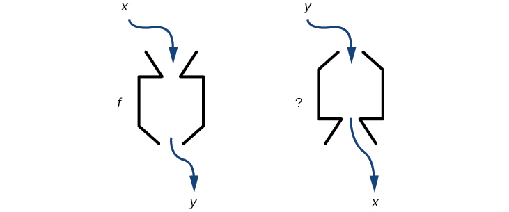
Verifying That Two Functions Are Inverse Functions
Betty is traveling to Milan for a fashion show and wants to know what the temperature will be. She is not familiar with the Celsius scale. To get an idea of how temperature measurements are related, Betty wants to convert 75 degrees Fahrenheit to degrees Celsius, using the formula
and substitutes 75 for to calculate
Knowing that a comfortable 75 degrees Fahrenheit is about 24 degrees Celsius, Betty gets the week’s weather forecast from Figure 2 for Milan, and wants to convert all of the temperatures to degrees Fahrenheit.
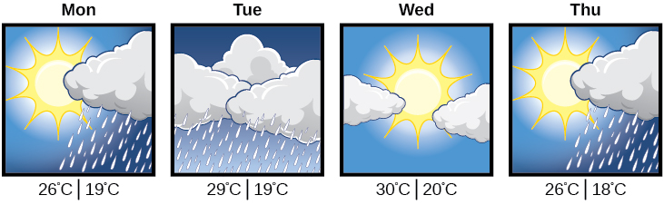
At first, Betty considers using the formula she has already found to complete the conversions. After all, she knows her algebra, and can easily solve the equation for after substituting a value for For example, to convert 26 degrees Celsius, she could write
After considering this option for a moment, however, she realizes that solving the equation for each of the temperatures will be awfully tedious. She realizes that since evaluation is easier than solving, it would be much more convenient to have a different formula, one that takes the Celsius temperature and outputs the Fahrenheit temperature.
The formula for which Betty is searching corresponds to the idea of an inverse function, which is a function for which the input of the original function becomes the output of the inverse function and the output of the original function becomes the input of the inverse function.
Given a function we represent its inverse as read as inverse of The raised is part of the notation. It is not an exponent; it does not imply a power of . In other words, does not mean because is the reciprocal of and not the inverse.
The “exponent-like” notation comes from an analogy between function composition and multiplication: just as (1 is the identity element for multiplication) for any nonzero number so equals the identity function, that is,
This holds for all in the domain of Informally, this means that inverse functions “undo” each other. However, just as zero does not have a reciprocal, some functions do not have inverses.
Given a function we can verify whether some other function is the inverse of by checking if both and are true.
For example, and are inverse functions.
and
A few coordinate pairs from the graph of the function are (−2, −8), (0, 0), and (2, 8). A few coordinate pairs from the graph of the function are (−8, −2), (0, 0), and (8, 2). If we interchange the input and output of each coordinate pair of a function, the interchanged coordinate pairs would appear on the graph of the inverse function.
Identifying an Inverse Function for a Given Input-Output Pair
If for a particular one-to-one function and what are the corresponding input and output values for the inverse function?
Solution
The inverse function reverses the input and output quantities, so if
Alternatively, if we want to name the inverse function then and
Testing Inverse Relationships Algebraically
If and is
Solution
We must also verify the other formula.
so
Analysis
Notice the inverse operations are in reverse order of the operations from the original function.
Determining Inverse Relationships for Power Functions
If (the cube function) and is
Solution
No, the functions are not inverses.
Analysis
The correct inverse to the cube is, of course, the cube root that is, the one-third is an exponent, not a multiplier.
Finding Domain and Range of Inverse Functions
The outputs of the function are the inputs to so the range of is also the domain of Likewise, because the inputs to are the outputs of the domain of is the range of We can visualize the situation as in Figure 3.
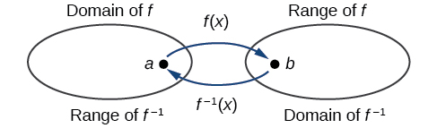
When a function has no inverse function, it is possible to create a new function where that new function on a limited domain does have an inverse function. For example, the inverse of is because a square “undoes” a square root; but the square is only the inverse of the square root on the domain since that is the range of
We can look at this problem from the other side, starting with the square (toolkit quadratic) function If we want to construct an inverse to this function, we run into a problem, because for every given output of the quadratic function, there are two corresponding inputs (except when the input is 0). For example, the output 9 from the quadratic function corresponds to the inputs 3 and –3. But an output from a function is an input to its inverse; if this inverse input corresponds to more than one inverse output (input of the original function), then the “inverse” is not a function at all! To put it differently, the quadratic function is not a one-to-one function; it fails the horizontal line test, so it does not have an inverse function. In order for a function to have an inverse, it must be a one-to-one function.
In many cases, if a function is not one-to-one, we can still restrict the function to a part of its domain on which it is one-to-one. For example, we can make a restricted version of the square function with its domain limited to which is a one-to-one function (it passes the horizontal line test) and which has an inverse (the square-root function).
If on then the inverse function is
- The domain of = range of =
- The domain of = range of =
Finding the Inverses of Toolkit Functions
Identify which of the toolkit functions besides the quadratic function are not one-to-one, and find a restricted domain on which each function is one-to-one, if any. The toolkit functions are reviewed in Table 2. We restrict the domain in such a fashion that the function assumes all y-values exactly once.
| Constant | Identity | Quadratic | Cubic | Reciprocal |
| Reciprocal squared | Cube root | Square root | Absolute value | |
Solution
The constant function is not one-to-one, and there is no domain (except a single point) on which it could be one-to-one, so the constant function has no meaningful inverse.
The absolute value function can be restricted to the domain where it is equal to the identity function.
The reciprocal-squared function can be restricted to the domain
Analysis
We can see that these functions (if unrestricted) are not one-to-one by looking at their graphs, shown in Figure 4. They both would fail the horizontal line test. However, if a function is restricted to a certain domain so that it passes the horizontal line test, then in that restricted domain, it can have an inverse.
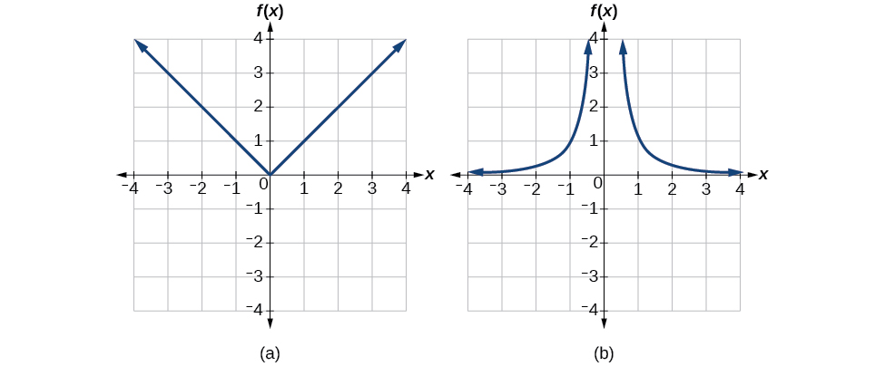
Finding and Evaluating Inverse Functions
Once we have a one-to-one function, we can evaluate its inverse at specific inverse function inputs or construct a complete representation of the inverse function in many cases.
Inverting Tabular Functions
Suppose we want to find the inverse of a function represented in table form. Remember that the domain of a function is the range of the inverse and the range of the function is the domain of the inverse. So we need to interchange the domain and range.
Each row (or column) of inputs becomes the row (or column) of outputs for the inverse function. Similarly, each row (or column) of outputs becomes the row (or column) of inputs for the inverse function.
Interpreting the Inverse of a Tabular Function
A function is given in Table 3, showing distance in miles that a car has traveled in minutes. Find and interpret
| 30 | 50 | 70 | 90 | |
| 20 | 40 | 60 | 70 |
Solution
The inverse function takes an output of and returns an input for So in the expression 70 is an output value of the original function, representing 70 miles. The inverse will return the corresponding input of the original function 90 minutes, so The interpretation of this is that, to drive 70 miles, it took 90 minutes.
Alternatively, recall that the definition of the inverse was that if then By this definition, if we are given then we are looking for a value so that In this case, we are looking for a so that which is when
Evaluating the Inverse of a Function, Given a Graph of the Original Function
We saw in Functions and Function Notation that the domain of a function can be read by observing the horizontal extent of its graph. We find the domain of the inverse function by observing the vertical extent of the graph of the original function, because this corresponds to the horizontal extent of the inverse function. Similarly, we find the range of the inverse function by observing the horizontal extent of the graph of the original function, as this is the vertical extent of the inverse function. If we want to evaluate an inverse function, we find its input within its domain, which is all or part of the vertical axis of the original function’s graph.
Evaluating a Function and Its Inverse from a Graph at Specific Points
A function is given in Figure 5. Find and
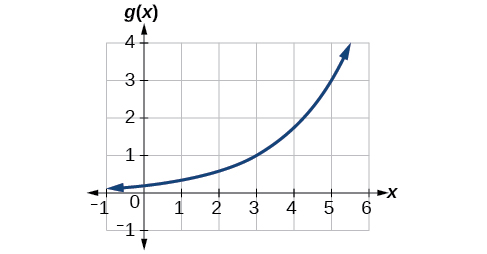
Solution
To evaluate we find 3 on the x-axis and find the corresponding output value on the y-axis. The point tells us that
To evaluate recall that by definition means the value of x for which By looking for the output value 3 on the vertical axis, we find the point on the graph, which means so by definition, See Figure 6.
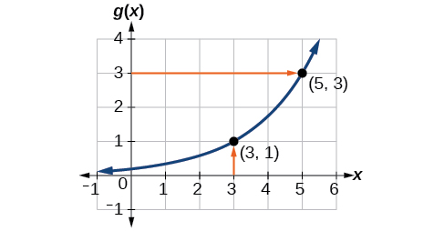
Finding Inverses of Functions Represented by Formulas
Sometimes we will need to know an inverse function for all elements of its domain, not just a few. If the original function is given as a formula— for example, as a function of we can often find the inverse function by solving to obtain as a function of
Inverting the Fahrenheit-to-Celsius Function
Find a formula for the inverse function that gives Fahrenheit temperature as a function of Celsius temperature.
Solution
By solving in general, we have uncovered the inverse function. If
then
In this case, we introduced a function to represent the conversion because the input and output variables are descriptive, and writing could get confusing.
Solving to Find an Inverse Function
Find the inverse of the function
Solution
So or
Analysis
The domain and range of exclude the values 3 and 4, respectively. and are equal at two points but are not the same function, as we can see by creating Table 5.
| 1 | 2 | 5 | ||
| 3 | 2 | 5 |
Solving to Find an Inverse with Radicals
Find the inverse of the function
Solution
So
The domain of is Notice that the range of is so this means that the domain of the inverse function is also
Analysis
The formula we found for looks like it would be valid for all real However, itself must have an inverse (namely, ) so we have to restrict the domain of to in order to make a one-to-one function. This domain of is exactly the range of
Finding Inverse Functions and Their Graphs
Now that we can find the inverse of a function, we will explore the graphs of functions and their inverses. Let us return to the quadratic function restricted to the domain on which this function is one-to-one, and graph it as in Figure 7.
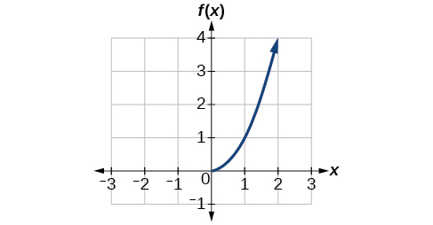
Restricting the domain to makes the function one-to-one (it will obviously pass the horizontal line test), so it has an inverse on this restricted domain.
We already know that the inverse of the toolkit quadratic function is the square root function, that is, What happens if we graph both and on the same set of axes, using the axis for the input to both
We notice a distinct relationship: The graph of is the graph of reflected about the diagonal line which we will call the identity line, shown in Figure 8.
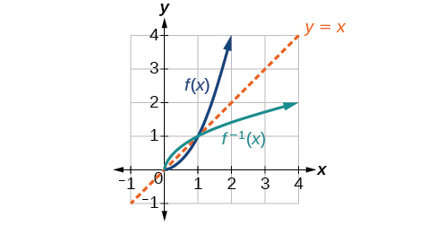
This relationship will be observed for all one-to-one functions, because it is a result of the function and its inverse swapping inputs and outputs. This is equivalent to interchanging the roles of the vertical and horizontal axes.
Finding the Inverse of a Function Using Reflection about the Identity Line
Given the graph of in Figure 9, sketch a graph of
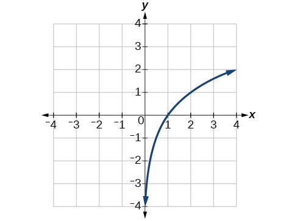
Solution
This is a one-to-one function, so we will be able to sketch an inverse. Note that the graph shown has an apparent domain of and range of so the inverse will have a domain of and range of
If we reflect this graph over the line the point reflects to and the point reflects to Sketching the inverse on the same axes as the original graph gives Figure 10.
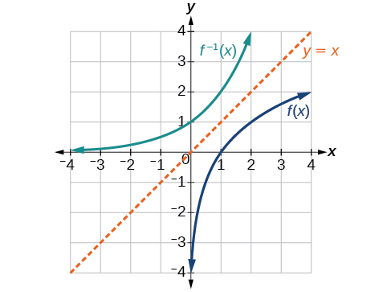
Key Concepts
- If is the inverse of then See Example 1, Example 2, and Example 3.
- Each of the toolkit functions has an inverse. See Example 4.
- For a function to have an inverse, it must be one-to-one (pass the horizontal line test).
- A function that is not one-to-one over its entire domain may be one-to-one on part of its domain.
- For a tabular function, exchange the input and output rows to obtain the inverse. See Example 5.
- The inverse of a function can be determined at specific points on its graph. See Example 6.
- To find the inverse of a formula, solve the equation for as a function of Then exchange the labels and See Example 7, Example 8, and Example 9.
- The graph of an inverse function is the reflection of the graph of the original function across the line See Example 10.
Section Exercises
Verbal
Describe why the horizontal line test is an effective way to determine whether a function is one-to-one?
Solution
Each output of a function must have exactly one output for the function to be one-to-one. If any horizontal line crosses the graph of a function more than once, that means that -values repeat and the function is not one-to-one. If no horizontal line crosses the graph of the function more than once, then no -values repeat and the function is one-to-one.
Why do we restrict the domain of the function to find the function’s inverse?
Can a function be its own inverse? Explain.
Solution
Yes. For example, is its own inverse.
Are one-to-one functions either always increasing or always decreasing? Why or why not?
How do you find the inverse of a function algebraically?
Solution
Given a function solve for in terms of Interchange the and Solve the new equation for The expression for is the inverse,
Algebraic
Show that the function is its own inverse for all real numbers
For the following exercises, find for each function.
Solution
Solution
Solution
For the following exercises, find a domain on which each function is one-to-one and non-decreasing. Write the domain in interval notation. Then find the inverse of restricted to that domain.
Solution
domain of
Solution
domain of
Given and
- ⓐ Find and
- ⓑ What does the answer tell us about the relationship between and
Solution
- ⓐ and
- ⓑ This tells us that and are inverse functions
For the following exercises, use function composition to verify that and are inverse functions.
and
Solution
and
Graphical
For the following exercises, use a graphing utility to determine whether each function is one-to-one.
Solution
one-to-one
Solution
one-to-one
For the following exercises, determine whether the graph represents a one-to-one function.
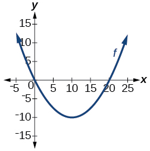
Solution
not one-to-one
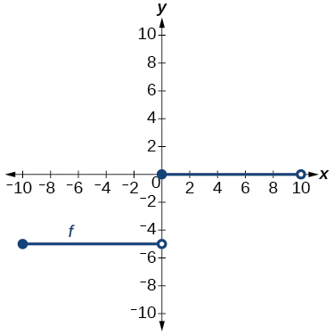
For the following exercises, use the graph of shown in Figure 11.
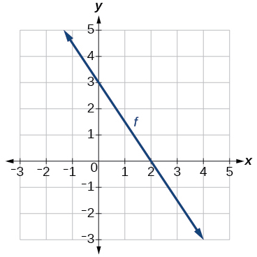
Find
Solution
Solve
Find
Solution
Solve
For the following exercises, use the graph of the one-to-one function shown in Figure 12.
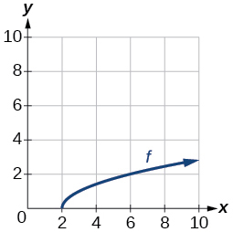
Sketch the graph of
Solution
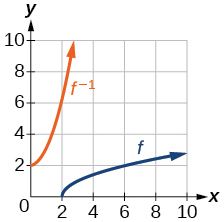
Find
If the complete graph of is shown, find the domain of
Solution
If the complete graph of is shown, find the range of
Numeric
For the following exercises, evaluate or solve, assuming that the function is one-to-one.
If find
Solution
If find
If find
Solution
If find
For the following exercises, use the values listed in Table 6 to evaluate or solve.
| 0 | 1 | 2 | 3 | 4 | 5 | 6 | 7 | 8 | 9 | |
| 8 | 0 | 7 | 4 | 2 | 6 | 5 | 3 | 9 | 1 |
Find
Solution
Solve
Find
Solution
Solve
Use the tabular representation of in Table 7 to create a table for
| 3 | 6 | 9 | 13 | 14 | |
| 1 | 4 | 7 | 12 | 16 |
Solution
| 1 | 4 | 7 | 12 | 16 | |
| 3 | 6 | 9 | 13 | 14 |
Technology
For the following exercises, find the inverse function. Then, graph the function and its inverse.
Solution
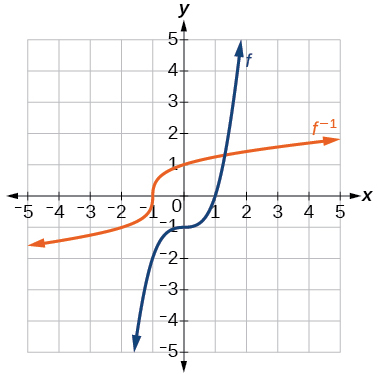
Find the inverse function of Use a graphing utility to find its domain and range. Write the domain and range in interval notation.
Real-World Applications
To convert from degrees Celsius to degrees Fahrenheit, we use the formula Find the inverse function, if it exists, and explain its meaning.
Solution
Given the Fahrenheit temperature, this formula allows you to calculate the Celsius temperature.
The circumference of a circle is a function of its radius given by Express the radius of a circle as a function of its circumference. Call this function Find and interpret its meaning.
A car travels at a constant speed of 50 miles per hour. The distance the car travels in miles is a function of time, in hours given by Find the inverse function by expressing the time of travel in terms of the distance traveled. Call this function Find and interpret its meaning.
Solution
The time for the car to travel 180 miles is 3.6 hours.
Chapter Review Exercises
Functions and Function Notation
For the following exercises, determine whether the relation is a function.
Solution
function
for the independent variable and the dependent variable
Solution
not a function
Is the graph in Figure 13 a function?
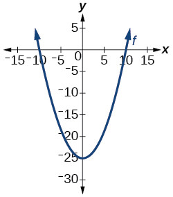
For the following exercises, evaluate the function at the indicated values:
Solution
For the following exercises, determine whether the functions are one-to-one.
Solution
one-to-one
For the following exercises, use the vertical line test to determine if the relation whose graph is provided is a function.
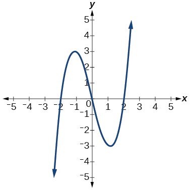
Solution
function
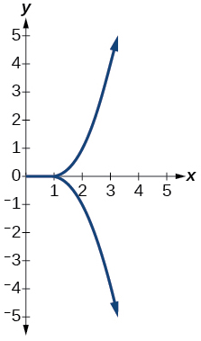
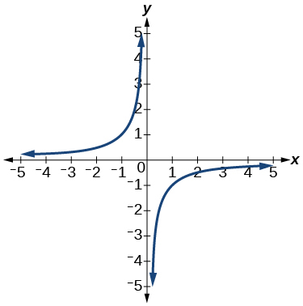
Solution
function
For the following exercises, graph the functions.
Solution
For the following exercises, use Figure 14 to approximate the values.
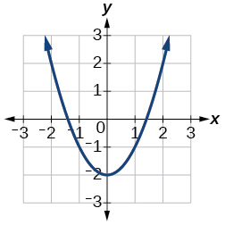
Solution
If then solve for
If then solve for
Solution
or
For the following exercises, use the function to find the values.
Solution
Domain and Range
For the following exercises, find the domain of each function, expressing answers using interval notation.
Solution
Graph this piecewise function:
Solution
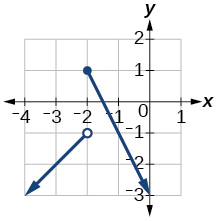
Rates of Change and Behavior of Graphs
For the following exercises, find the average rate of change of the functions from
Solution
For the following exercises, use the graphs to determine the intervals on which the functions are increasing, decreasing, or constant.
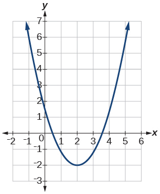
Solution
increasing decreasing
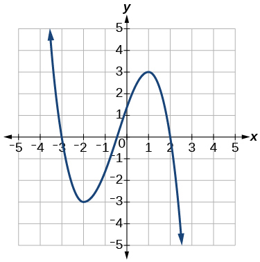
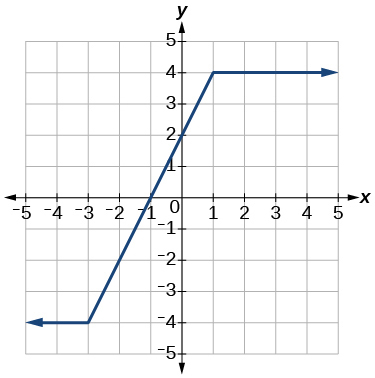
Solution
increasing constant
Find the local minimum of the function graphed in Exercise.
Find the local extrema for the function graphed in Exercise.
Solution
local minimum local maximum
For the graph in Figure 15, the domain of the function is The range is Find the absolute minimum of the function on this interval.
Find the absolute maximum of the function graphed in Figure 15.
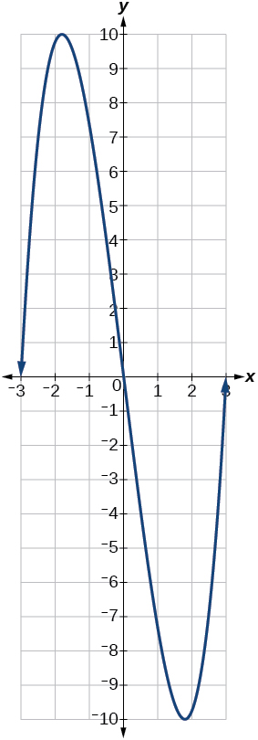
Solution
Absolute Maximum: 10
Composition of Functions
For the following exercises, find and for each pair of functions.
Solution
Solution
For the following exercises, find and the domain for for each pair of functions.
Solution
Solution
For the following exercises, express each function as a composition of two functions and where
Solution
sample:
Transformation of Functions
For the following exercises, sketch a graph of the given function.
Solution
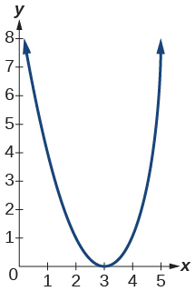
Solution
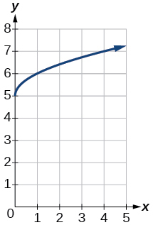
Solution
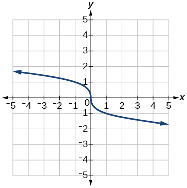
Solution
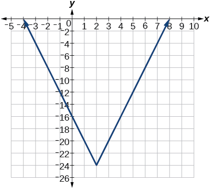
For the following exercises, sketch the graph of the function if the graph of the function is shown in Figure 16.
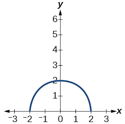
Solution
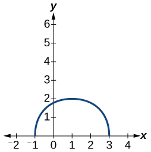
For the following exercises, write the equation for the standard function represented by each of the graphs below.
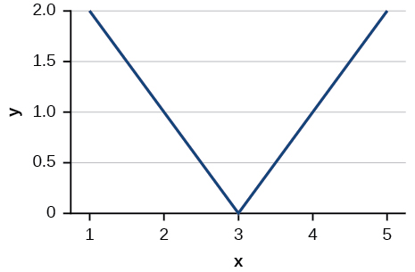
Solution
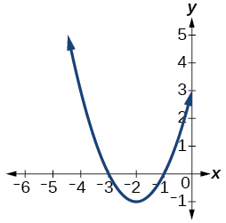
For the following exercises, determine whether each function below is even, odd, or neither.
Solution
even
Solution
odd
For the following exercises, analyze the graph and determine whether the graphed function is even, odd, or neither.
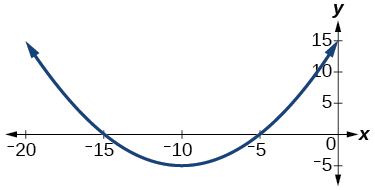
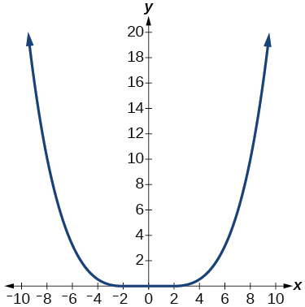
Solution
even
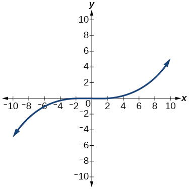
Absolute Value Functions
For the following exercises, write an equation for the transformation of
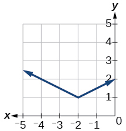
Solution
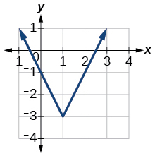
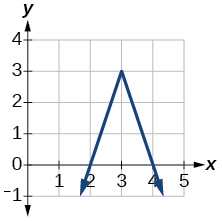
Solution
For the following exercises, graph the absolute value function.
Solution
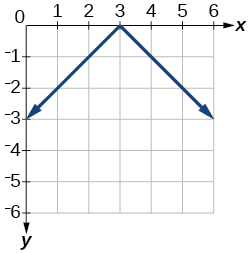
For the following exercises, solve the absolute value equation.
Solution
For the following exercises, solve the inequality and express the solution using interval notation.
Solution
Inverse Functions
For the following exercises, find for each function.
Solution
For the following exercise, find a domain on which the function is one-to-one and non-decreasing. Write the domain in interval notation. Then find the inverse of restricted to that domain.
Given and
- Find and
- What does the answer tell us about the relationship between and
For the following exercises, use a graphing utility to determine whether each function is one-to-one.
Solution
The function is one-to-one.
![A graph of the reciprocal function y = 1/x, showing a curve in the first and third quadrants of the Cartesian coordinate system. The x-axis and y-axis are labeled with tick marks from -4 to 4. The curve has a vertical asymptote at x=0 (the y-axis) and a horizontal asymptote at y=0 (the x-axis). In the first quadrant, the curve starts high near the positive y-axis, passes through (1,1) and extends towards the positive x-axis. In the third quadrant, the curve starts low near the negative y-axis, passes through (-1,-1) and extends towards the negative x-axis.](../../media/CNX_Precalc_Figure_01_07_248.jpg)
Solution
The function is not one-to-one.
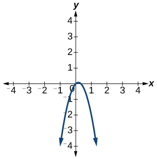
If find
Solution
If find
Practice Test
For the following exercises, determine whether each of the following relations is a function.
Solution
The relation is a function.
For the following exercises, evaluate the function at the given input.
Solution
−16
Show that the function is not one-to-one.
Solution
The graph is a parabola and the graph fails the horizontal line test.
Write the domain of the function in interval notation.
Given find
Solution
Graph the function
Find the average rate of change of the function by finding
Solution
For the following exercises, use the functions to find the composite functions.
Solution
Express as a composition of two functions, and where
For the following exercises, graph the functions by translating, stretching, and/or compressing a toolkit function.
Solution
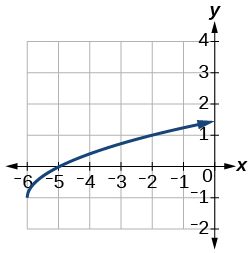
For the following exercises, determine whether the functions are even, odd, or neither.
Solution
Solution
Graph the absolute value function
Solve
Solution
and
Solve Express the solution in interval notation.
For the following exercises, find the inverse of the function.
Solution
For the following exercises, use the graph of shown in Figure 17.
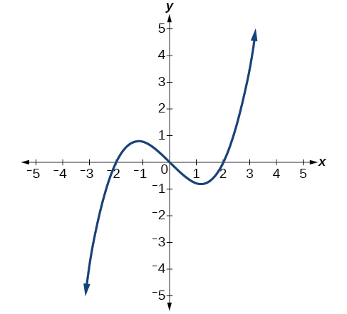
On what intervals is the function increasing?
Solution
On what intervals is the function decreasing?
Approximate the local minimum of the function. Express the answer as an ordered pair. The ordered pair should include both the value as well as the value.
Solution
Approximate the local maximum of the function. Express the answer as an ordered pair. The ordered pair should include both the value as well as the value.
For the following exercises, use the graph of the piecewise function shown in Figure 18.
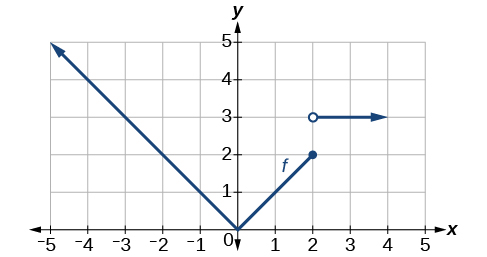
Find
Solution
Find
Write an equation for the piecewise function.
Solution
For the following exercises, use the values listed in Table 8.
| 0 | 1 | 2 | 3 | 4 | 5 | 6 | 7 | 8 | |
| 1 | 3 | 5 | 7 | 9 | 11 | 13 | 15 | 17 |
Find
Solve the equation
Solution
Is the graph increasing or decreasing on its domain?
Is the function represented by the graph one-to-one?
Solution
yes
Find
Given find
Solution
Analysis
Notice that if we show the coordinate pairs in a table form, the input and output are clearly reversed. See Table 1.